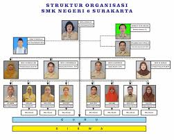

Tentang Kami
Informasi Instansi
SIMTARU (Sistem Informasi Tata Ruang) adalah sistem yang dikembangkan oleh Dinas Pekerjaan Umum dan Penataan Ruang (PUPR) Kota Bukittinggi. Sistem ini bertujuan untuk memantau, merencanakan, dan mengendalikan tata ruang secara digital dan efisien.
Dinas PUPR Kota Bukittinggi memiliki peran penting dalam pengembangan infrastruktur kota dan pengelolaan ruang kota untuk mendukung pembangunan berkelanjutan dan kesejahteraan masyarakat.

Informasi Website
Website SIMTARU dirancang untuk menyediakan informasi lengkap mengenai tata ruang kota, termasuk peta digital, dokumen terkait, berita terbaru, dan fasilitas pengaduan.
Kami berkomitmen untuk memberikan informasi yang transparan dan mudah diakses untuk semua pihak yang berkepentingan, serta menyediakan alat untuk pelaporan dan masukan dari masyarakat.
Struktur Organisasi
Bagan struktur organisasi ini menunjukkan alur kepemimpinan dan tanggung jawab dalam Dinas PUPR Kota Bukittinggi. Setiap divisi memiliki peran yang jelas dalam pengembangan dan pemeliharaan infrastruktur kota, serta dalam pengelolaan tata ruang.
Tim SIMTARU terdiri dari berbagai ahli di bidang teknologi informasi, tata ruang, dan desain web, yang semuanya bekerja sama untuk memastikan bahwa sistem ini memenuhi standar tertinggi dan memberikan manfaat maksimal bagi masyarakat.